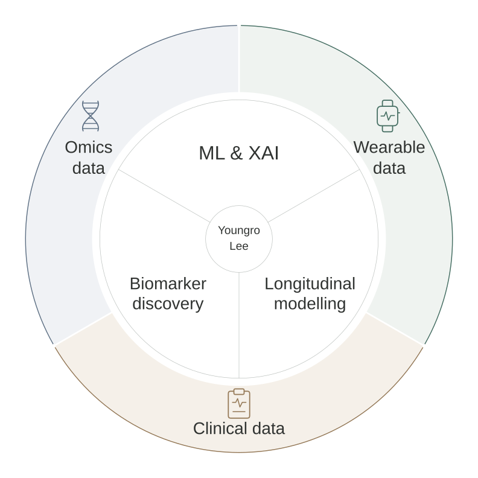

Research Associate · Imperial College London
National Heart and Lung Institute
Working with Professor Dennis Wang
Biomedical data science
Understanding health through
data, methods and collaboration.

I develop and apply computational methods to wearable, omics and clinical data. My work combines machine learning, explainable AI and longitudinal modelling to identify biomarkers and understand their clinical and biological relevance.
At Imperial, my main research combines longitudinal multi-omics and clinical data to study pulmonary hypertension. Within My Heart Counts, I study daily wear patterns and explore clinically useful measures derived from phone and smartwatch data. I work closely with clinicians and biologists to shape the questions, design the analysis and interpret the findings.
National Heart and Lung Institute
Working with Professor Dennis Wang
AI Institute and Institute of Engineering Research
Working with Professor Jongmo Seo
Department of Information Engineering
Systems Biology and Bioinformatics Group
Hosted by Professor Barbara Di Camillo
Seoul National University
Supervisor: Professor Jongmo Seo
Co-supervisor: Professor Barbara Di Camillo
Thesis: Advancing Stability and Validity in Machine Learning-Based Medical Data Analysis
Seoul National University
Seoul National University · Cum Laude
Current and past projects in which I lead or co-lead the computational research.
I lead computational work linking repeated DNA methylation and proteomic measurements with clinical follow-up in pulmonary hypertension. The research examines disease progression, treatment response and biological ageing, with a focus on how molecular and clinical changes relate over time.
Within My Heart Counts, I co-lead research on daily wear patterns and how they affect the activity and physiological measurements we observe. I also investigate whether passive phone and smartwatch data can estimate and forecast six-minute walk distance (6MWD).
Working with the University of Padova, I developed similarity-based feature selection and SHAP-based binarisation for microbial biomarker discovery in inflammatory bowel disease. I am now extending the latter into SHAP-based discretisation for microbial data, moving beyond a single binary threshold to more flexible representations.
In collaboration with clinical teams and the Korean Society of Hypertension, I lead computational analyses of smartwatch blood pressure data. This work examines calibration effects, measurement stability and individual differences, and develops post-processing methods to improve the usefulness of watch-based measurements.
Working with paediatric clinicians at Korea University Hospital, I developed machine learning models using clinical records from more than 2,500 patients. I designed a decision-support pipeline linking patient questionnaires with model predictions during consultations, and now advise on analyses of newly collected data.
I study how sample size, feature coverage and model performance affect the validity and stability of feature importance in biomedical machine learning. In the related CLE-SH project, I directed the study design and analytical approach and supervised implementation of a toolkit for statistical interpretation of SHAP values.
* Equal contribution
Kim K*, Lee Y*, Seo J · IEEE Access
A Python toolkit that combines feature selection, univariate analysis and interaction analysis of SHAP values with statistical testing. It produces written summaries to help users interpret model explanations.
Lee Y, Seo J, Di Camillo B · Scientific Reports
Uses SHAP-derived thresholds to turn microbial abundances into interpretable binary features. In the IBD datasets studied, the approach improved predictive performance across several models while making taxon-level contributions easier to interpret.
Lee Y, Baruzzo G, Kim J, Seo J, Di Camillo B · IEEE Access
Tests how feature-importance rankings change when prediction performance drops because samples or features are removed. In the datasets studied, reducing feature coverage preserved rankings more consistently than reducing sample size, showing why accuracy alone is an incomplete guide to interpretation.
Lee Y, Park S, Park J, Seo J, Lee H-Y · Clinical Hypertension
Examines daily blood pressure variation and recalibration effects in real-world smartwatch recordings. The results highlight limitations in tracking clinically relevant variability and the need to account for calibration-related changes.
Lee Y, Seo J, Kim Y-K · Biomedical Engineering Letters
Develops separate decision-support models for parents assessing whether to seek care and clinicians choosing tests for children with influenza-like illness. The models use information available in each setting and were evaluated using paediatric clinical records.
Lee Y*, Lee T*, Lee J, Lee H-Y, Seo J-M · IEEE Access
Compares smartwatch and cuff-based blood pressure measurements across repeated sessions in young adults. It examines how individual differences, recalibration and variability in the cuff reference influence the assessment of watch accuracy.
Lee Y, Park J, Park S, Seo J, Lee H-Y · IEEE Open Journal of Engineering in Medicine and Biology
Uses pre-post calibration differences as a proxy for the stability of smartwatch blood pressure measurements. It examines how these differences vary across users and demographic groups.
Lee Y, Cappellato M, Di Camillo B · GigaScience
Introduces a similarity-based transformation before recursive feature elimination to make microbial biomarker selection more reproducible. In IBD datasets, the approach improved the stability of selected features while retaining predictive performance.
Han M*, Lee Y-R*, Park T*, et al. · Hypertension Research
Evaluates the feasibility and measurement stability of cuffless smartwatch blood pressure monitoring in everyday use. It examines measurement patterns and changes around recalibration to assess the practical limits of using watch readings as clinical data.
Baek C, Kim J, Lee Y, Seo J-M · IEEE Transactions on Biomedical Engineering
Presents a fabrication method for implantable neural electrodes using cyclic olefin copolymer as the substrate. My contribution included experimental support in preparing the polymer films.
Lee Y, Seo J · IEEE EMBC
Proposes statistical testing of feature-importance values to help choose which candidate biomarkers to investigate. The method is illustrated using a public heart-failure dataset.
Lee Y, et al. · IEEE EMBC
Examines changes in smartwatch blood pressure readings before and after recalibration. The analysis links calibration differences to users’ blood pressure levels and motivates more individualised assessment of calibration stability.
Lee Y, Kim J, Bae S, Seo J-M · IEEE EMBC
Designs optical filter and prism arrangements to acquire images in multiple wavelength bands simultaneously. The configurations separate ultraviolet, visible and infrared light into different imaging paths.
HRfH Connect · Health Research from Home
International Meeting of Cardiovascular Disease Prevention
IEEE-EMBS Biomedical & Health Informatics
International Biomedical Engineering Conference
European Meeting on Hypertension & Cardiovascular Protection
Korean Society of Hypertension
At Seoul National University, I supervised and mentored 10 students on medical AI projects: two doctoral, five master's and three undergraduate students. I supported study design, computational analysis and interpretation, contributing to theses and conference submissions.
I delivered lectures and practical sessions as a teaching assistant in undergraduate and postgraduate biomedical signal courses (2022–2023), and a lecture on biomedical signal analysis for K-MOOC (2025).
Reviewer for IEEE EMBC and CIBB. Technical session chair at IEEE EMBC, Glasgow, 2022.
Beyond research, I have been active in parliamentary debating, including organising international competitions and serving as president of the Seoul National University Debate Association.
Get in touch
I welcome conversations about interpretable machine learning, longitudinal biomedical data and collaborative clinical research.